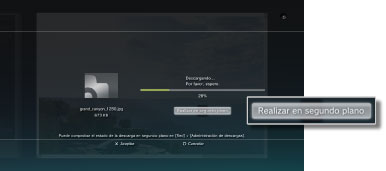
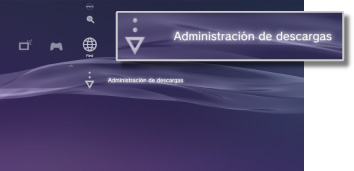

Red > Descarga en segundo plano
Descarga en segundo plano
Con la función de descarga en segundo plano puede llevar a cabo otras operaciones mientras descarga varios elementos de datos con un tamaño de archivo grande. Esta función está disponible únicamente si se visualiza [Realizar en segundo plano] en la pantalla que se muestra durante la descarga.

Notas
- Es posible que no pueda realizar la descarga en segundo plano en función del tipo de datos o del número de elementos de datos que se están descargando.
- Es posible que sea necesario efectuar la instalación de datos descargados como juegos o archivos de vídeo para poder utilizarlos. Una vez finalizada la descarga, los datos que necesitan ser instalados se visualizarán como
 o
o  en cada categoría.
en cada categoría. - Es posible que la descarga en segundo plano no esté disponible si hay datos sin instalar en el almacenamiento del sistema.
- Si se apaga el sistema PS3™ durante una descarga en segundo plano, el estado de la descarga se guardará. La descarga se reiniciará automáticamente la siguiente vez que se encienda y se conecte a Internet el sistema PS3™.
- Las descargas en segundo plano se detendrán temporalmente cuando se realice cualquiera de las siguientes operaciones. La descarga se reiniciará automáticamente una vez completada la operación.
- - Durante la reproducción de un disco Blu-ray Disc o un DVD.
- - Cuando se utilicen las funciones de red de juegos online*.
- - Cuando se inicie software de formato PlayStation®2.
- - Cuando se utilice el chat de voz o vídeo.
- - Cuando se esté efectuando una actualización del sistema.
- - Cuando se estén configurando elementos de ajuste en
 (Ajustes).
(Ajustes).
*
Mientras se está finalizando un juego, las descargas en segundo plano se detendrán temporalmente.
Avisos
- Es posible que algunos títulos de software de formato PlayStation®2 o PlayStation® funcionen de manera diferente en el sistema PS3™ que en los sistemas PlayStation®2 o PlayStation®, o que no funcionen correctamente en el sistema PS3™.
- Además, los discos de formato PlayStation®2 no pueden reproducirse en algunos sistemas PS3™. Para obtener más información, consulte [Tipos de discos que se pueden reproducir], visite el sitio Web de SIE de su región o revise la documentación suministrada con su sistema PS3™.
Administración de descargas
Esta opción aparece únicamente cuando se está llevando a cabo una descarga en segundo plano. Es posible comprobar el estado de la descarga o cancelarla del  (Navegador de Internet) o de
(Navegador de Internet) o de  (PlayStation®Store). Seleccione
(PlayStation®Store). Seleccione  (Administración de descargas) en
(Administración de descargas) en  (Red).
(Red).

Comprobación del estado de la descarga
Seleccione el icono correspondiente a los datos de los que desea comprobar el estado de la descarga, pulse el botón  y, a continuación, seleccione [Estado] en el menú de opciones.
y, a continuación, seleccione [Estado] en el menú de opciones.
Cancelación de la descarga
Seleccione el icono correspondiente a los datos cuya descarga desea cancelar, pulse el botón y, a continuación, seleccione [Cancelar] en el menú de opciones. Después de cancelar la descarga, se borrará de (Administración de descargas).
Pausa y reanudación de las descargas
Seleccione el icono de los datos cuya descarga desea detener, pulse el botón y, a continuación, seleccione [Pausa] en el menú de opciones. Para reanudar la descarga, pulse el botón de nuevo y, a continuación, seleccione [Reanudar] en el menú de opciones.
Notas
- Si pausa la descarga,
 se visualizará con el icono.
se visualizará con el icono. - Si pausa una descarga durante la descarga de varios elementos de datos, comenzará a descargarse automáticamente el siguiente elemento de datos.
Pausar todas las descargas
Seleccione un icono correspondiente a una descarga, pulse el botón y, a continuación, seleccione [Pausar todo] en el menú de opciones.
Reanudar todas las descargas
Seleccione un icono correspondiente a una descarga, pulse el botón y, a continuación, seleccione [Reanudar todo] en el menú de opciones.